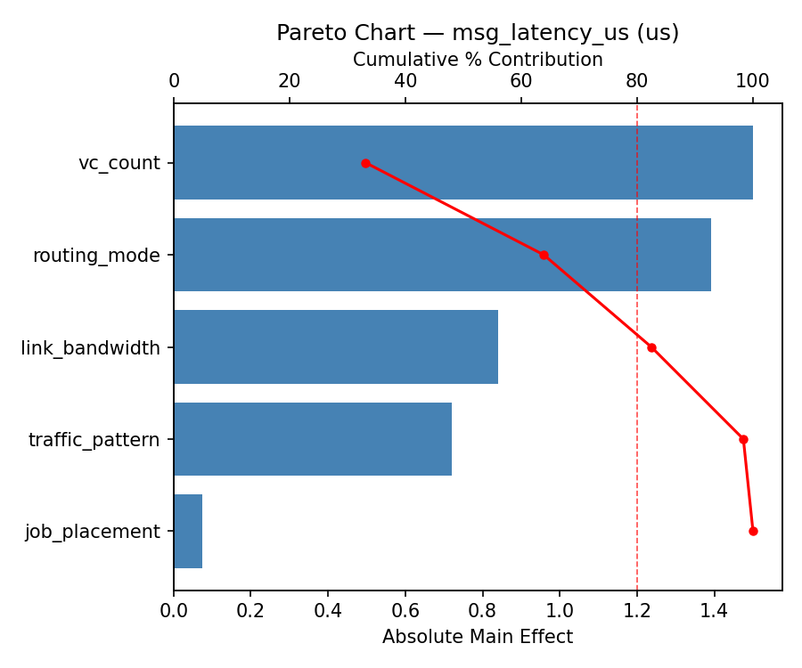
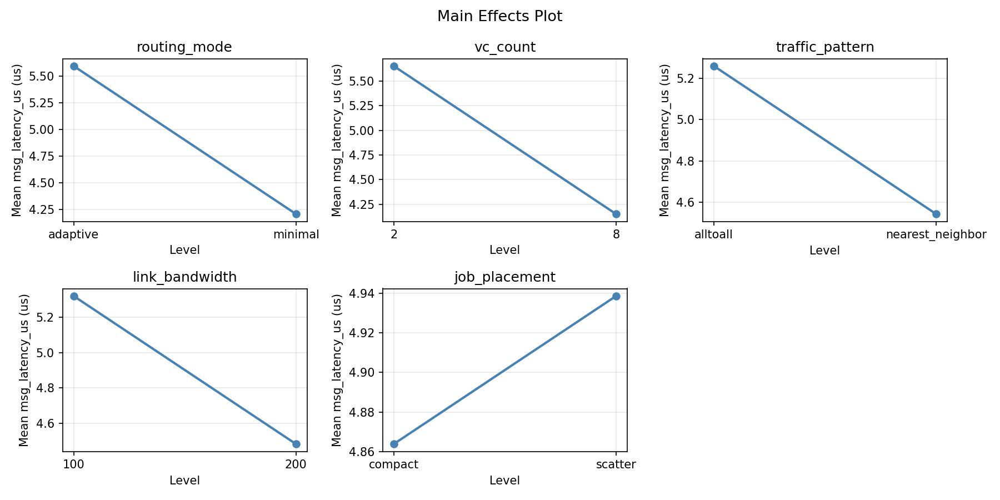
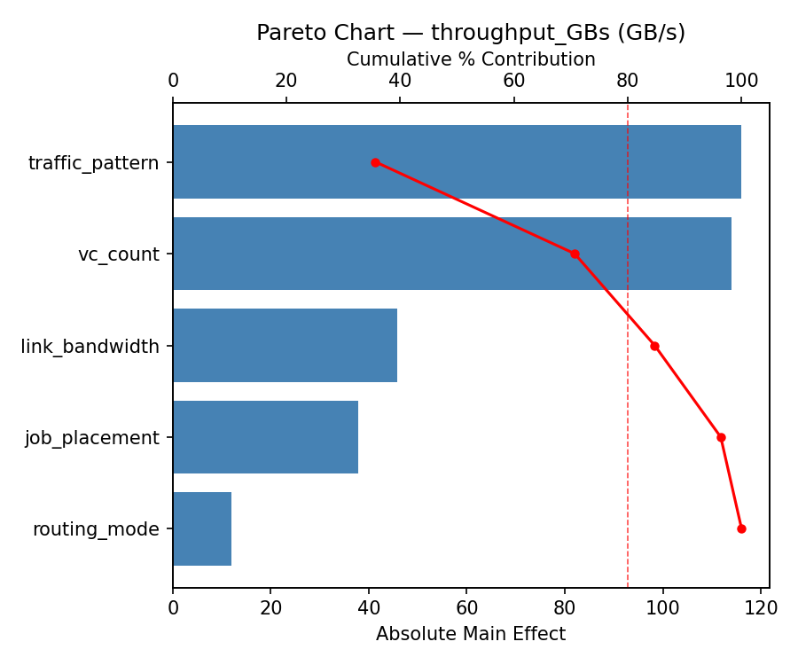
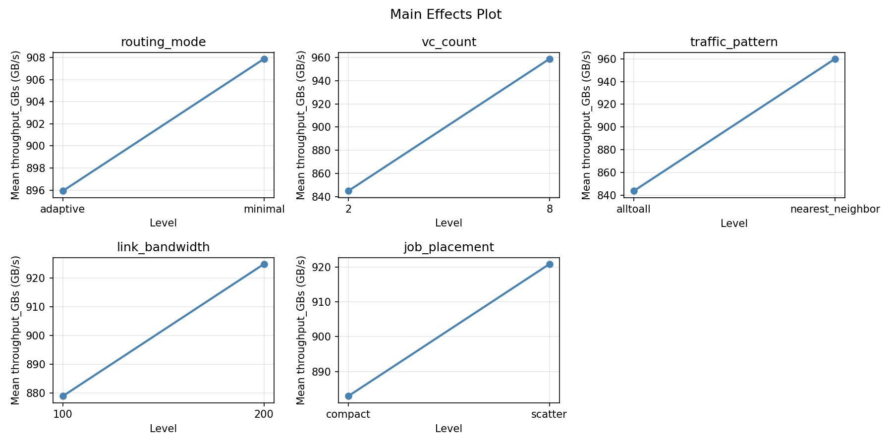
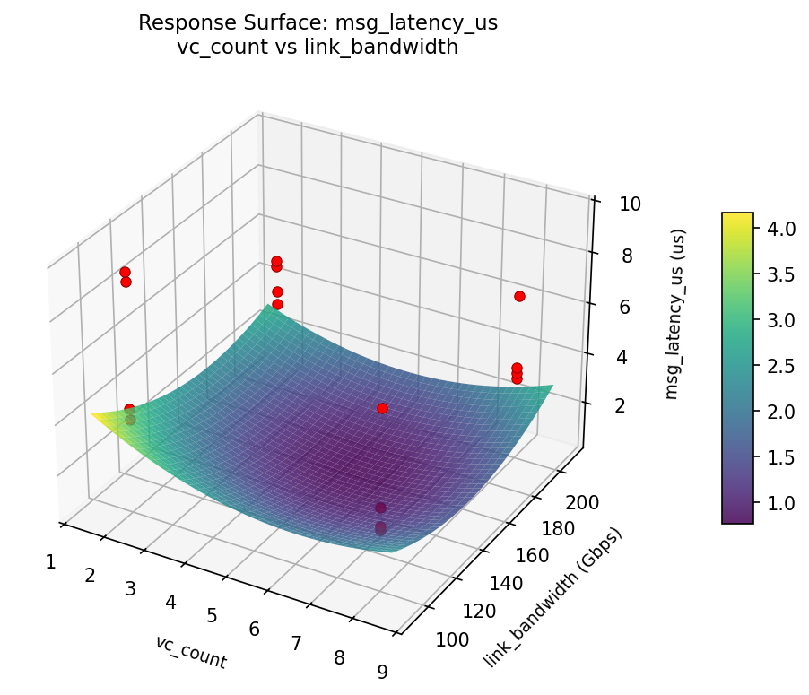
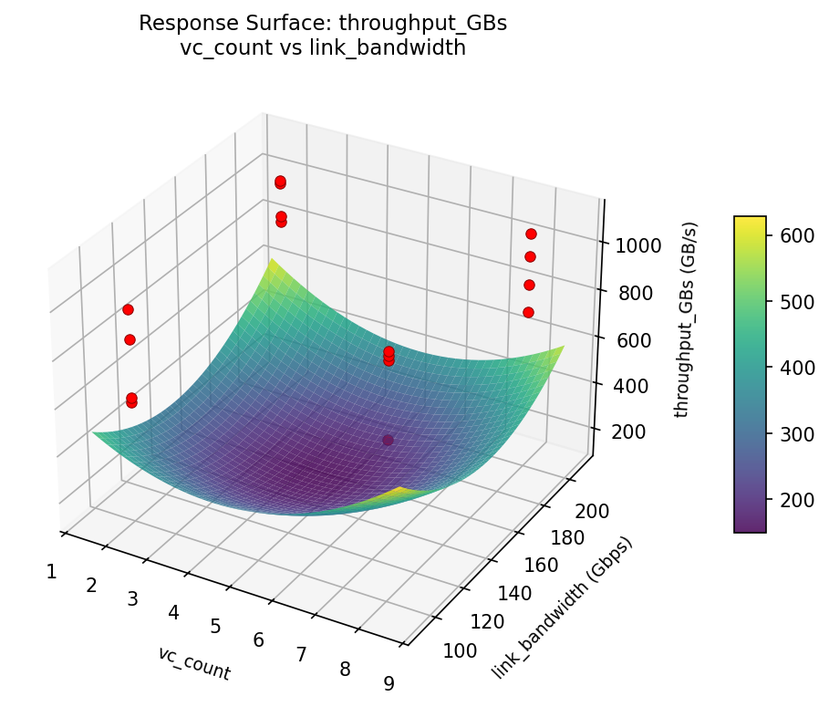

Summary
This experiment investigates interconnect topology & adaptive routing. Plackett-Burman screening design to identify dominant factors in dragonfly network routing performance.
The design varies 5 factors: routing mode, ranging from minimal to adaptive, vc count, ranging from 2 to 8, traffic pattern, ranging from nearest_neighbor to alltoall, link bandwidth (Gbps), ranging from 100 to 200, and job placement, ranging from compact to scatter. The goal is to optimize 2 responses: msg latency us (us) (minimize) and throughput GBs (GB/s) (maximize). Fixed conditions held constant across all runs include topology = dragonfly, groups = 16, switches per group = 48, nodes = 3072.
A Plackett-Burman screening design was used to efficiently test 5 factors in only 16 runs. This design assumes interactions are negligible and focuses on identifying the most influential main effects.
Key Findings
For msg latency us, the most influential factors were link bandwidth (44.3%), job placement (21.0%), vc count (20.6%). The best observed value was 2.53 (at routing mode = adaptive, vc count = 8, traffic pattern = alltoall).
For throughput GBs, the most influential factors were link bandwidth (50.5%), routing mode (15.5%), vc count (15.5%). The best observed value was 1104.56 (at routing mode = minimal, vc count = 2, traffic pattern = alltoall).
Recommended Next Steps
- Follow up with a response surface design (CCD or Box-Behnken) on the top 3–4 factors to model curvature and find the true optimum.
- Consider whether any fixed factors should be varied in a future study.
- The screening results can guide factor reduction — drop factors contributing less than 5% and re-run with a smaller, more focused design.
Experimental Setup
Factors
| Factor | Levels | Type | Unit |
|---|
routing_mode | minimal, adaptive | categorical | |
vc_count | 2, 8 | continuous | |
traffic_pattern | nearest_neighbor, alltoall | categorical | |
link_bandwidth | 100, 200 | continuous | Gbps |
job_placement | compact, scatter | categorical | |
Fixed: topology = dragonfly, groups = 16, switches_per_group = 48, nodes = 3072
Responses
| Response | Direction | Unit |
|---|
msg_latency_us | ↓ minimize | us |
throughput_GBs | ↑ maximize | GB/s |
Experimental Matrix
The Plackett-Burman Design produces 16 runs. Each row is one experiment with specific factor settings.
| Run | Block | routing_mode | vc_count | traffic_pattern | link_bandwidth | job_placement |
|---|
| 1 | 1 | adaptive | 8 | alltoall | 100 | compact |
| 2 | 1 | minimal | 2 | alltoall | 200 | compact |
| 3 | 1 | minimal | 8 | nearest_neighbor | 200 | compact |
| 4 | 1 | adaptive | 8 | alltoall | 200 | scatter |
| 5 | 1 | minimal | 8 | nearest_neighbor | 100 | scatter |
| 6 | 1 | adaptive | 2 | nearest_neighbor | 200 | scatter |
| 7 | 1 | minimal | 2 | alltoall | 100 | scatter |
| 8 | 1 | adaptive | 2 | nearest_neighbor | 100 | compact |
| 9 | 2 | adaptive | 8 | alltoall | 100 | compact |
| 10 | 2 | adaptive | 8 | alltoall | 200 | scatter |
| 11 | 2 | minimal | 8 | nearest_neighbor | 100 | scatter |
| 12 | 2 | minimal | 2 | alltoall | 100 | scatter |
| 13 | 2 | minimal | 2 | alltoall | 200 | compact |
| 14 | 2 | minimal | 8 | nearest_neighbor | 200 | compact |
| 15 | 2 | adaptive | 2 | nearest_neighbor | 200 | scatter |
| 16 | 2 | adaptive | 2 | nearest_neighbor | 100 | compact |
How to Run
$ python doe.py info --config use_cases/18_interconnect_topology_routing/config.json
$ python doe.py generate --config use_cases/18_interconnect_topology_routing/config.json --output results/run.sh --seed 42
$ bash results/run.sh
$ python doe.py analyze --config use_cases/18_interconnect_topology_routing/config.json
$ python doe.py optimize --config use_cases/18_interconnect_topology_routing/config.json
$ python doe.py report --config use_cases/18_interconnect_topology_routing/config.json --output report.html
Analysis Results
Generated from actual experiment runs.
Response: msg_latency_us
Pareto Chart

Main Effects Plot

Response: throughput_GBs
Pareto Chart

Main Effects Plot

Response Surface Plots
3D surfaces fitted with quadratic RSM. Red dots are observed data points.
msg_latency_us: vc_count vs link_bandwidth

throughput_GBs: vc_count vs link_bandwidth

Full Analysis Output
=== Main Effects: msg_latency_us ===
Factor Effect Std Error % Contribution
--------------------------------------------------------------
link_bandwidth 1.4000 0.5394 53.9%
vc_count -0.4225 0.5394 16.3%
traffic_pattern 0.2725 0.5394 10.5%
routing_mode 0.2625 0.5394 10.1%
job_placement 0.2400 0.5394 9.2%
=== Interaction Effects: msg_latency_us ===
Factor A Factor B Interaction % Contribution
------------------------------------------------------------------------
routing_mode job_placement -1.4000 36.6%
routing_mode traffic_pattern -0.4225 11.0%
vc_count link_bandwidth -0.3250 8.5%
traffic_pattern job_placement 0.3250 8.5%
routing_mode vc_count 0.2725 7.1%
vc_count traffic_pattern 0.2625 6.9%
link_bandwidth job_placement -0.2625 6.9%
routing_mode link_bandwidth -0.2400 6.3%
vc_count job_placement 0.1600 4.2%
traffic_pattern link_bandwidth -0.1600 4.2%
=== Summary Statistics: msg_latency_us ===
routing_mode:
Level N Mean Std Min Max
------------------------------------------------------------
adaptive 8 4.7700 2.2452 2.5300 9.5100
minimal 8 5.0325 2.2124 2.6900 9.1700
vc_count:
Level N Mean Std Min Max
------------------------------------------------------------
2 8 5.1125 2.7516 2.5300 9.5100
8 8 4.6900 1.5171 3.4100 7.1800
traffic_pattern:
Level N Mean Std Min Max
------------------------------------------------------------
alltoall 8 4.7650 2.1716 2.6900 9.1700
nearest_neighbor 8 5.0375 2.2840 2.5300 9.5100
link_bandwidth:
Level N Mean Std Min Max
------------------------------------------------------------
100 8 4.2012 0.7444 3.3700 5.4200
200 8 5.6013 2.8811 2.5300 9.5100
job_placement:
Level N Mean Std Min Max
------------------------------------------------------------
compact 8 4.7812 2.2149 2.6900 9.1700
scatter 8 5.0213 2.2442 2.5300 9.5100
=== Main Effects: throughput_GBs ===
Factor Effect Std Error % Contribution
--------------------------------------------------------------
link_bandwidth -98.4525 41.3864 38.5%
routing_mode 97.8875 41.3864 38.3%
job_placement 36.9425 41.3864 14.4%
vc_count 21.0850 41.3864 8.2%
traffic_pattern 1.4450 41.3864 0.6%
=== Interaction Effects: throughput_GBs ===
Factor A Factor B Interaction % Contribution
------------------------------------------------------------------------
routing_mode job_placement 98.4525 20.1%
vc_count traffic_pattern 97.8875 20.0%
link_bandwidth job_placement -97.8875 20.0%
vc_count job_placement -59.2600 12.1%
traffic_pattern link_bandwidth 59.2600 12.1%
routing_mode link_bandwidth -36.9425 7.5%
routing_mode traffic_pattern 21.0850 4.3%
vc_count link_bandwidth 8.5850 1.8%
traffic_pattern job_placement -8.5850 1.8%
routing_mode vc_count 1.4450 0.3%
=== Summary Statistics: throughput_GBs ===
routing_mode:
Level N Mean Std Min Max
------------------------------------------------------------
adaptive 8 852.9575 147.9771 587.2800 1088.1600
minimal 8 950.8450 177.0681 606.3400 1104.5600
vc_count:
Level N Mean Std Min Max
------------------------------------------------------------
2 8 891.3587 205.2416 587.2800 1088.1600
8 8 912.4438 127.8577 745.4700 1104.5600
traffic_pattern:
Level N Mean Std Min Max
------------------------------------------------------------
alltoall 8 901.1788 164.5003 606.3400 1073.5200
nearest_neighbor 8 902.6237 177.9444 587.2800 1104.5600
link_bandwidth:
Level N Mean Std Min Max
------------------------------------------------------------
100 8 951.1275 87.3484 845.6000 1073.5200
200 8 852.6750 213.4414 587.2800 1104.5600
job_placement:
Level N Mean Std Min Max
------------------------------------------------------------
compact 8 883.4300 164.4862 606.3400 1104.5600
scatter 8 920.3725 175.7561 587.2800 1088.1600
Optimization Recommendations
=== Optimization: msg_latency_us ===
Direction: minimize
Best observed run: #6
routing_mode = minimal
vc_count = 2
traffic_pattern = alltoall
link_bandwidth = 200
job_placement = compact
Value: 2.53
Factor importance:
1. job_placement (effect: 1.6, contribution: 36.3%)
2. traffic_pattern (effect: 1.2, contribution: 26.1%)
3. link_bandwidth (effect: -0.8, contribution: 19.2%)
4. vc_count (effect: 0.7, contribution: 15.7%)
5. routing_mode (effect: 0.1, contribution: 2.7%)
=== Optimization: throughput_GBs ===
Direction: maximize
Best observed run: #3
routing_mode = minimal
vc_count = 8
traffic_pattern = nearest_neighbor
link_bandwidth = 200
job_placement = compact
Value: 1104.56
Factor importance:
1. job_placement (effect: -153.5, contribution: 46.2%)
2. routing_mode (effect: 97.3, contribution: 29.3%)
3. link_bandwidth (effect: 40.1, contribution: 12.1%)
4. traffic_pattern (effect: -30.6, contribution: 9.2%)
5. vc_count (effect: -10.6, contribution: 3.2%)